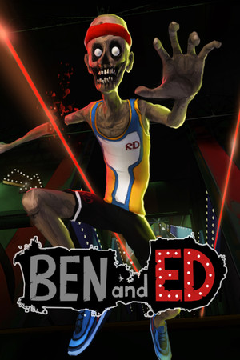
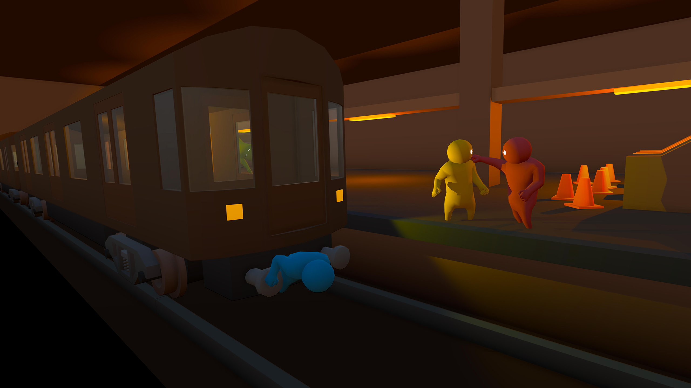
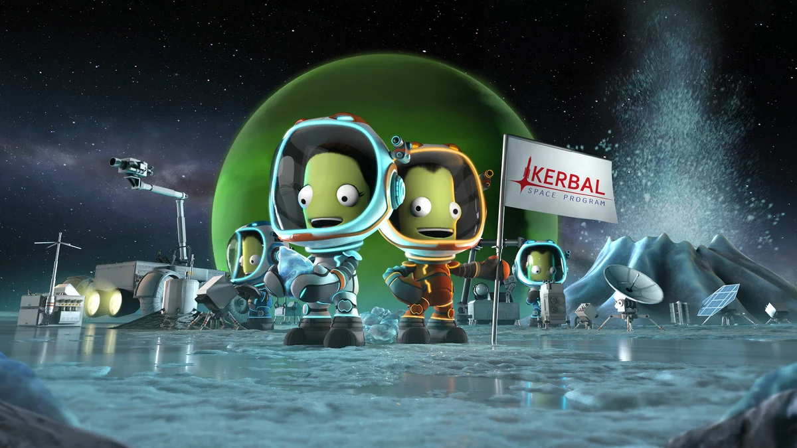
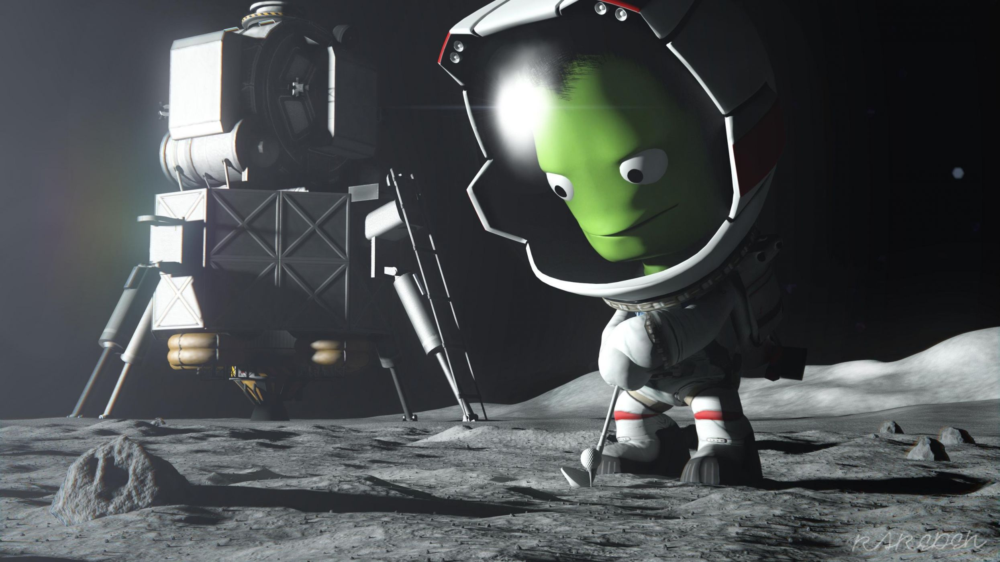

Здесь я советуую игры для пользователей, которые ищут, во что-бы поиграть. Делюсь своим мнением, делаю разбор игр.
Ben and Ed и Ben & Ed blood party — это игра в жанре аркада, разрабатываемая Sluggerfly для платформы PC. Окружение в игре относится к cтилистике спорт, а выделить особенности можно следующие: экшен, инди, зомби, трехмерный платформер, паркур, приключенческая игра, мясо, сложная, для одного игрока, смешная, для нескольких игроков, хоррор, отличный саундтрек, юмор, спортивная игра, blood, платформер, черный юмор, кооператив, достижения steam, 3d-платформер, приключение, кровь, чёрный юмор, мрачная. Вам будут доступны такие игровые режимы как «для одного игрока». Во всем мире игра Ben and Ed распространяется по модели разовая покупка издателем Sluggerfly. На данный момент стадия игры — запущена, а дата её выхода — 08.12.2015. Бесплатно скачать Ben and Ed, в том числе и через торрент, нельзя, поскольку игра распространяется по модели разовая покупка.
Локальный и онлайновый файтинг, разработанный компанией Boneloaf и изданный Double Fine Presents. Игра выпущена в Steam в раннем доступе 29 августа 2014 года на Windows, OS X и Linux. Релиз игры также состоялся на консолях PlayStation 4 и PlayStation VR, в 2017 году. Релиз игры на Xbox One состоялся 27 марта 2019 года.
разработанная и изданная компанией Squad. Игра относится к жанру подлинных космических симуляторов, продолжая реализм таких игр, как Apollo 18: Mission to the Moon и Microsoft Space Simulator. События в игре происходят в вымышленной игровой вселенной, где инопланетяне начинают свою космическую программу, которая развивается под управлением игрока. Во время игры необходимо конструировать космические ракеты и самолёты, запускать их и выполнять исследовательские и научные задачи. Аналогами возможных в Kerbal Space Program космических программ являются программа «Аполлон», Международная космическая станция, Марсианская научная лаборатория. Игра имеет поддержку модификаций.
  скачать эти игры можно здесь